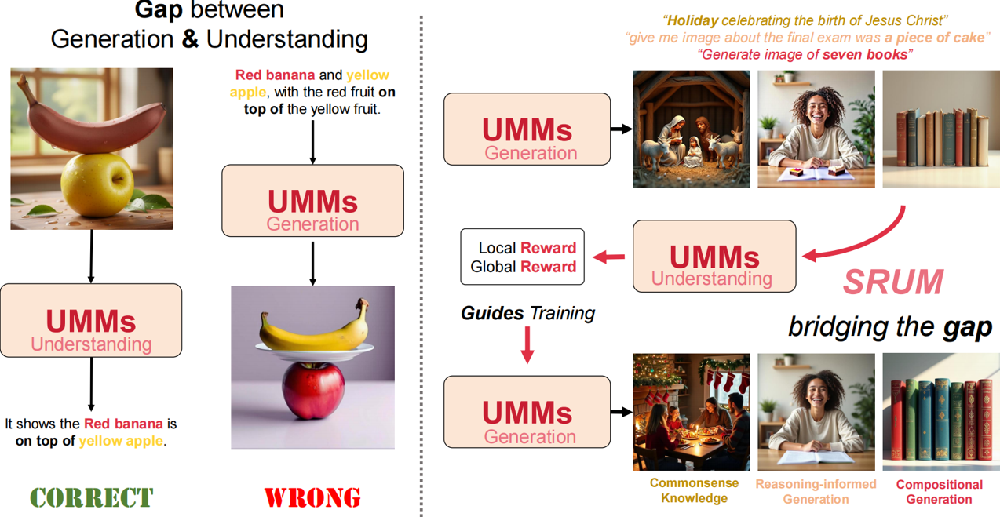

T2I-CompBench
82.18 → 88.37
Self-rewarding post-training for unified multimodal models
Close the understanding–generation gap by letting a UMM’s own understanding module reward its generation — without extra human labels.
The University of Hong Kong · Peking University

82.18 → 88.37
43.82 → 46.75
None required for rewards
UMMs can understand a prompt yet still miss attributes when generating. SRUM freezes understanding as an evaluator and updates generation with a global–local dual reward — the same narrative as the paper figure above.
| Question | How we study it | |
|---|---|---|
| Q1 | Can understanding supervise generation without labels? | Offline self-rewarding on frozen UMM scores. |
| Q2 | What reward granularity is needed? | Global α plus local region map R. |
| Q3 | Does it transfer beyond one metric? | CompBench and ReasonBench gains on BAGEL. |

L = L_r + λ_c · L_ref (λ_c = 0.5).Defaults: AdamW · lr 2.5×10−5 · warmup 500 · grad clip 1.0 · see method.md
| Model | Overall |
|---|---|
| Bagel | 82.18 |
| Bagel (CoT) | 84.46 |
| Bagel + SRUM (CoT) | 88.37 |
| Model | Average |
|---|---|
| Bagel | 43.82 |
| Bagel + SFT | 45.37 |
| Bagel + SRUM | 46.75 |
Main paper benches plus related suites under Bagel/eval/. Details in evaluate.md.
@inproceedings{jin2026srum,
title={Srum: Fine-grained self-rewarding for unified multimodal models},
author={Jin, Weiyang and Niu, Yuwei and Liao, Jiaqi and Duan, Chengqi and Li, Aoxue and Gao, Shenghua and Liu, Xihui},
booktitle={European Conference on Computer Vision},
pages={675--691},
year={2026},
organization={Springer}
}